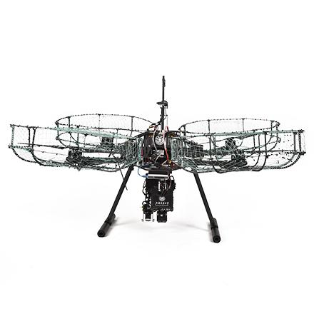
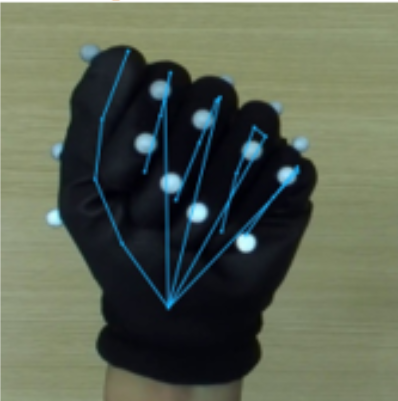
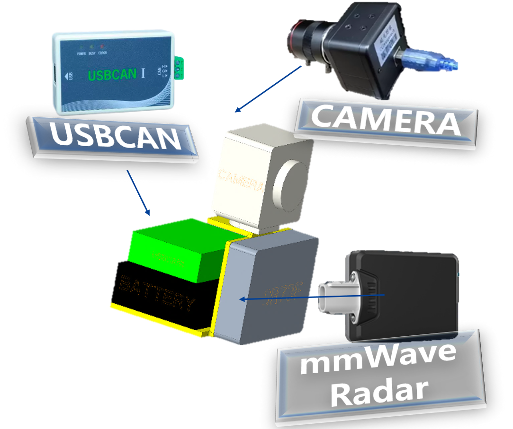
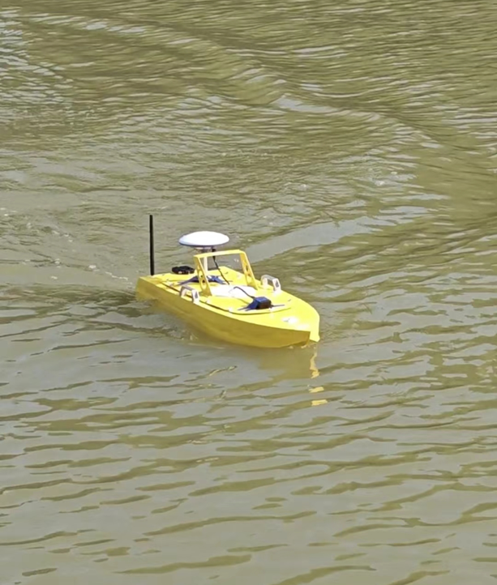
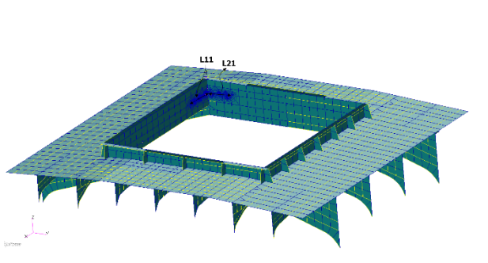
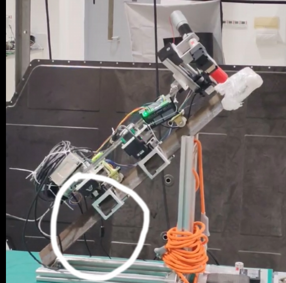
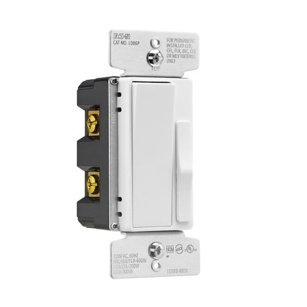
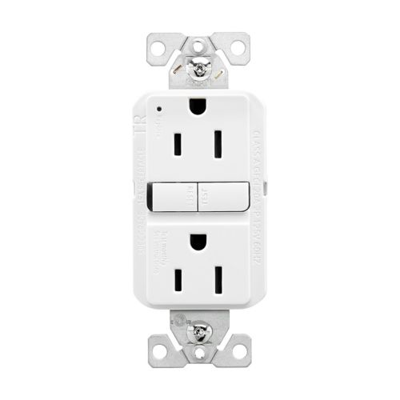
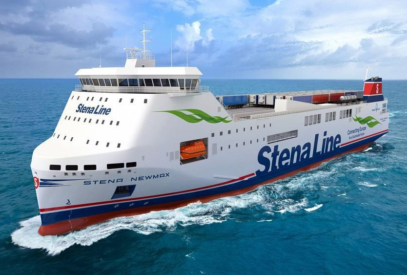

HELLO, I'M XUE JIANG ✳
Making robots
understand the
physical world.
Robotics M.S. student at Georgia Tech. I work at the intersection of robot learning, perception, and simulation—turning real-world complexity into systems that can sense, reason, and act.
Driven by a curiosity for how things move.
I am a first-year Master's student in Robotics at the Georgia Institute of Technology, with an undergraduate background in Naval Architecture and Ocean Engineering from Shanghai Jiao Tong University.
From building an autonomous surface vehicle to reconstructing robot-ready environments from video, I'm interested in connecting rigorous engineering with learning-based intelligence. Today, my research spans dexterous manipulation and real-to-sim pipelines for robot learning.
Find me on GitHubRoboMaster.
Built to compete.
RoboMaster is DJI's university-level robotics competition, combining mechanical design, embedded systems, computer vision, control and real-time team strategy in an arena-based robot battle. Teams design, build and operate their own robots—including infantry, hero, engineer, sentry and aerial systems.
In 2023, SJTU's Yunhan Jiaolong team came back through the revival bracket and won the national championship in Shenzhen.


Explore the robots and arena.
Browse the competition organizer's original photos, including 2023 Shanghai Jiao Tong University championship robots.
Official RoboMaster photo gallery ↗From mechanical design to competition-ready robots.
Worked on mechanical design for the aerial robot and wheel-leg systems, including aiming/launching and locomotion mechanisms, mechanical integration and testing. Collaborated with teammates on vision-assisted aiming validation. This section describes my engineering contributions; the championship was a full-team achievement.
Official photos © their respective owners, credited to SJTU's 2023 championship coverage. The Bilibili finals recording opens on Bilibili; video availability is controlled by the uploader.
Researching the next
generation of robot intelligence.
Combining physical understanding, scalable data, and simulation to make robots more capable in unstructured environments.

01Dexterous Manipulation for Lab Automation
Building data and perception pipelines to support dexterous robot manipulation in clinical-lab-style tasks.
Learning Bimanual Dexterity from Human Videos
Reconstructing simulation-ready scenes from videos to explore learning bimanual robot behaviors.
Ideas translated into working systems.
Hands-on engineering across autonomous navigation, perception, and computational design.

03Radar–Camera Fusion for Field-Robot Perception
Combining a monocular camera and 77 GHz mmWave radar to enrich object detection for field-robot operation.

04Autonomous Marine Vehicle Navigation & Control
Developing an RRT path planner and validating an autonomous model boat through iterative field testing.
 05
05Toroidal Propeller Design & Hydrodynamic Optimization
Pairing parametric geometry generation with CFD to investigate efficient toroidal propeller designs.

06Container-Ship Hatch-Corner Optimization
Patran/Nastran submodeling and multi-island genetic optimization reduced simulated maximum stress by 20.6%.

07Climbing Robot
Mechanical design for a tower-climbing and bolt-tightening robot, including structural weight reduction.
Industry experience.
Eaton
Mechanical Engineering Intern · LD06P dimmer and GFCI development


China Merchants Group
Electrical Engineering Intern · CM320 / Stena Futura RoRo vessel

Publication.
Investigation of the Effects of Key Geometric Parameters on the Hydrodynamic Performance of Toroidal Propellers
X. Jiang, Y. He, and Y. Wang, “Investigation of the Effects of Key Geometric Parameters on the Hydrodynamic Performance of Toroidal Propellers,” in Proceedings of the 35th National Conference on Hydrodynamics, Harbin, China, Aug. 2024. (In Chinese).
Get in touch.
I'm interested in research collaborations and Summer 2027 internship opportunities in robotics, machine learning, and simulation.
Explore my GitHub